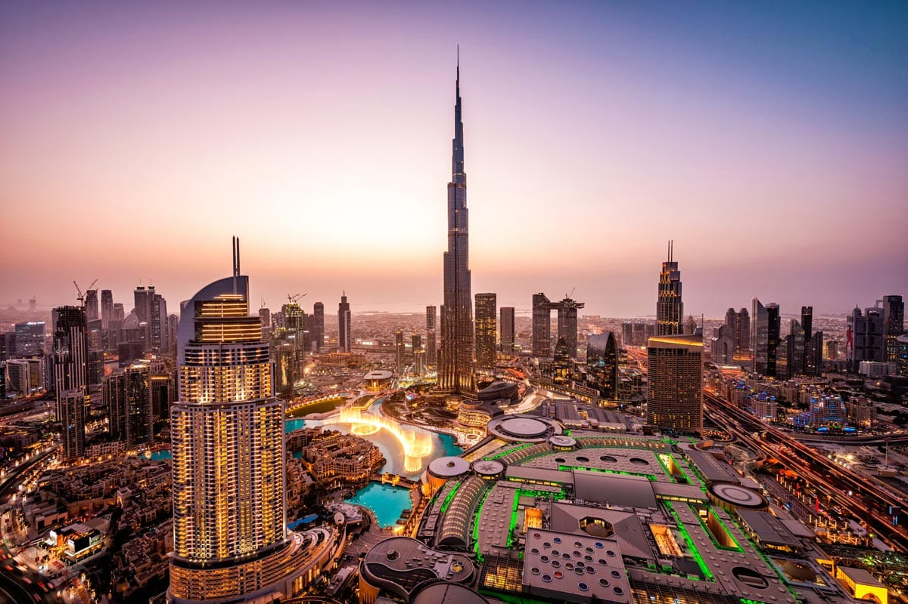

My favourite car is the Genesis G80. The exterior is sleek, whereas the interior is too futuristic for its generation. The reason why this car is my favourite is because of its simplicity, potential, and its unique interior.

My favourite dish is pizza. As a kid, I have always loved pizza which is why it is still my favourite dish. The perfect twist between a fluffy crust, tangy sauce, and a lavish helping of some mozzarella cheese makes this dish a tasty delicacy.

My favourite TV show is The Office. Being the first show I watched, I was hooked all through the 9 seasons of comedy. This show is heard about worldwide, by the iconic characters and humour. A subtle sitcom, but a chaotic masterpiece.

My favourite travel destination is Dubai. The reason why I pick it as my favourite travel destination is because of its unique aspects; futuristic look, tropical climate, tourist attraction. As part of my bucket list, I have experienced the city, mesmerized by its sceneries and intrigued on what new contributions it has to the world.
My favourite movie is The Dark Knight. In this super fictional journey about Gotham's Dark Knight, Christopher Nolan delivers a masterpiece. The fictional aspect of this movie is blended in with the reality of crime-inflicted cities, allowing chances to relate to the characters.
I aspire to become a software engineer in the future. I enjoy diving into the depths of how technology works and interpreting the process of each individual component in creating a stream of technology. As the way things are moving with technology, it holds an important aspect to our future and in creating a new environment.

One of my hobbies is drawing. Whenever I draw, I feel relaxed. It helps me to take my mind off stress-inducing parts of my day. One thing about drawing is that once you lose focus, you lose momentum, which is why I am drawn to be focused and concentrated when drawing.

The sport I enjoy playing the most is badminton. Out of all sports, I find badminton the most comforting and the one that I have the most experience in. As a kid, I have always loved challenging my sister to badminton, and I continue to challenge her and my friends as well. I strive to get better and play in a club one day.

I want to explore new countries and indulge completely in their cultures. Sharing new stories and experiences plays a role in my identity, as I love to explore. I want to travel to Paris in the future. I've been wanting to explore this romantic destination, because the scenery and atmosphere in Paris is worth wanting to explore.

My family has always guided me in the right direction. Being one of the most important people in my life, I am grateful to have a family that cares about their son's pursuits and goals. My parents always give me full support and motivation, unless it's a step in the wrong direction, my parents will push me to accomplish my dreams and goals.

My culture is one of the major aspects of my identity. It's represented by the many stories that make it a whole. My culture is one of the main reasons how people look at me and what stories I have to tell to others. As an Indian, I celebrate a lot of festivals and respect traditions including the many aspects of my religion. For example, I celebrate Diwali and I was lucky enough to represent my culture when our school hosted its own Diwali event. It's an honor to proudly represent my culture to others and share its stories to others as well.
My daily routine describes what I am like. In the morning, I usually have an hour or two to get ready, and it usually passes mostly through forcing myself to wake up due to the constant failed attempts to sleep on time. Then, I head on to school and focus on learning. Once school ends, I try heading to YMCA to exercise and relax from the workload of the day. Once I am fully relieved, I head home and spend time with my family because I don't get much time with them. My bedtime routine is quite simple as I fall asleep fast.